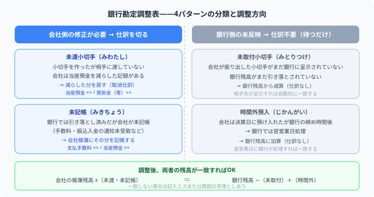

【日商簿記2級】銀行勘定調整表とは？
4パターンの調整法・仕訳の要否・未渡小切手の科目ひっかけ罠を完全網羅
こんにちは、大谷です！実は、これから紹介する各種の論点は、どれも僕が大学の講義内で初めて学んだとき、「うわっ、なんじゃこりゃ……！」と頭を抱えた難しいものばかりでした（笑）。だからこそ、当時の僕と同じように悩んでいる皆さんに、どこよりも直感的にパズル感覚で理解してもらえるよう、僕なりの分かりやすい図解を交えてお届けします！
また、毎日のブログ執筆やアプリ開発のモチベーション維持のために、記事の末尾のほうにある「いいねボタン」をポチッと押してもらえると、めちゃくちゃ励みになりますしすごく嬉しいです！それでは、一緒に攻略していきましょう！
銀行勘定調整表は、会社の当座預金帳簿残高と銀行の残高証明書のズレを整理する論点です。試験で差がつくのは「仕訳が必要か不要か」の判断と、未渡小切手の借方科目（買掛金 or 未払金）のひっかけです。ズレの原因が「銀行側」にあるのか「会社側」にあるのかを整理すれば、すべての問いに答えられます。

銀行勘定調整表とは
会社が帳簿に記録した「当座預金残高」と、銀行から受け取る「残高証明書の金額」が一致しないとき、原因を分析して正しい残高に合わせる表が銀行勘定調整表です。簿記2級では主に「両者区分調整法」が出題されます。銀行残高・帳簿残高の両方を、それぞれ正しい残高（一致する金額）に向けて調整していく方法です。
ズレの原因は必ず次の2種類のどちらかです。
| 種類 | どういう状態か | 調整する対象 | 仕訳 |
|---|---|---|---|
| 銀行側がまだ反映していない | 会社の帳簿は正しい。銀行の処理が遅れているだけ | 銀行残高を加減算 | 不要 |
| 会社側がまだ記帳していない | 銀行では処理済みだが会社帳簿が追いついていない | 会社帳簿を加減算 | 必要 |
4パターンの原因と調整方向
試験に出る4つの原因を整理します。「誰が遅れているか」で仕訳の要否と調整方向がすべて決まります。
| 原因 | 責任側 | 内容 | 調整 | 仕訳 |
|---|---|---|---|---|
| 未取付小切手 | 銀行側 | 会社が振り出した小切手を、受取人がまだ銀行に持ち込んでいない | 銀行残高 − 減算 | 不要 |
| 時間外預入 | 銀行側 | 会社は決算日に預入済みだが、銀行は翌営業日付けで処理 | 銀行残高 ＋ 加算 | 不要 |
| 未渡小切手 | 会社側 | 小切手を作成・記帳したが、相手方にまだ渡していない（取引未成立） | 会社帳簿 ＋ 加算 | 必要 |
| 未記帳 | 会社側 | 銀行で手数料引落や利息入金があったが、会社がまだ帳簿に記載していない | 会社帳簿 ± 加減算 | 必要 |
銀行側の未反映 ＝ 会社の仕訳は一切不要
未取付小切手と時間外預入は、どちらも「銀行がまだ追いついていない」だけで、会社の帳簿はすでに完全に正しく記録されています。会社側で何かを修正する必要は一切ありません。銀行勘定調整表の上で銀行残高を加減算するだけです。
銀行側が未反映であるということは、会社の帳簿残高はすでに正しい数字を指しています。銀行がまだ追いついていないだけで、会社には何も記帳漏れはありません。そのため、決算整理仕訳を切る必要はゼロです。「未取付小切手があるから仕訳する」という誤解が最多失点パターンです。
未取付小切手——なぜ銀行残高から「引く」のか？
会社が買掛金の支払いなどで小切手を振り出すと、その時点で会社帳簿はすでに「（買掛金）×× / （当座預金）××」と記帳しています。一方、受取人がまだ銀行に小切手を持ち込んでいないため、銀行口座からはまだお金が引き落とされていません。
受取人がまだ銀行に小切手を換金しに来ていないだけで、その小切手はいずれ必ず銀行口座から引き落とされる運命にあります。つまり、銀行残高は今は高く見えているだけで、本来あるべき正しい残高より多い状態です。正しい姿に合わせるために、銀行残高からその分をマイナスして調整します。「未来に必ず引かれるお金」を今の時点で差し引いて、正確な残高を出すというイメージです。
時間外預入——銀行残高に「足す」だけ
会社は決算日に現金を預け入れて帳簿に記録済みですが、銀行の窓口時間を過ぎていたため翌営業日付けで処理されました。会社帳簿には正しく記録されているので、銀行残高にその金額を加算するだけで調整完了です。会社側の仕訳は不要です。
会社側の修正 ＝ 決算整理仕訳が必要
未渡小切手と未記帳は「会社の帳簿に問題がある」ので、正しい帳簿残高に修正するための仕訳が必要です。
未渡小切手の仕訳
会社が小切手を作成した時点で「（買掛金 or 未払金）×× / （当座預金）××」と記帳しています。しかし相手方にまだ渡していないので、取引は未成立です。当座預金を誤って減らしているため、その記録をそのまま逆仕訳で取り消します。
| 借方 | 金額 | 貸方 | 金額 |
|---|---|---|---|
| 当座預金 | 40,000 | 買掛金 | 40,000 |
小切手作成時の仕訳（買掛金 / 当座預金）を逆に戻す。
未記帳の仕訳（銀行手数料の例）
銀行が自動で引き落とした手数料や振込先への入金処理など、銀行では処理済みだが会社が帳簿に記載していないケースです。銀行通知書を見て、会社帳簿に追加記録します。
| 借方 | 金額 | 貸方 | 金額 |
|---|---|---|---|
| 支払手数料 | 10,000 | 当座預金 | 10,000 |
計算例：調整表を完成させる
次の条件で銀行勘定調整表を作成します。
- 銀行残高証明書： 540,000円
- 会社帳簿残高： 470,000円
- 未取付小切手： 60,000円（受取人がまだ銀行に持ち込んでいない）
- 時間外預入： 20,000円（会社は記帳済み・銀行は翌日処理）
- 未渡小切手： 40,000円（買掛金支払用、相手方未着）
- 銀行手数料未記帳：10,000円（銀行引落済み・会社未記帳）
| 銀行残高証明書 | 540,000 |
| 未取付小切手（減算） | △ 60,000 |
| 時間外預入（加算） | ＋ 20,000 |
| 調整後残高 | 500,000 |
| 会社帳簿残高 | 470,000 |
| 未渡小切手（加算） | ＋ 40,000 |
| 銀行手数料（減算） | △ 10,000 |
| 調整後残高 | 500,000 |
銀行側・会社側の調整後残高が 500,000円 で一致すれば正解です。
よくあるミスと試験の罠
❌ ミス①：銀行側の問題なのに会社の仕訳を切ってしまう
「未取付小切手があった → 仕訳する」という誤解が最多失点パターンです。未取付小切手・時間外預入は銀行側の未反映であり、会社帳簿はすでに正しいため決算整理仕訳は不要です。
❌ ミス②：未取付小切手と未渡小切手を逆にする
未取付小切手は「相手が換金していない（銀行側の問題）」、未渡小切手は「自社がまだ渡していない（会社側の問題）」です。誰がまだ行動していないかを問題文から読み取りましょう。
❌ ミス③：調整後残高を一致させないまま終える
銀行勘定調整表は、銀行側と会社側の調整後残高が必ず一致します。一致しない場合は計算ミスか分類ミスです。最後に必ず両側の残高を確認してから次の設問へ進む習慣をつけましょう。
未渡小切手を元の帳簿に戻す（当座預金を増やす）とき、貸方は「当座預金」で固定ですが、借方の勘定科目は問題文の内容によって変わります。これが簿記2級の最大の裏トラップです。
・買掛金の支払いのために作った小切手なら → 借方は 【買掛金】
・備品や建物などの購入のために作った小切手なら → 借方は 【未払金】
理由は仕訳の逆算です。小切手を作成した時点で「（買掛金）/ （当座預金）」または「（未払金）/ （当座預金）」と記帳しているはずなので、それをそのまま逆に戻すことになります。問題文に「何のために作った小切手か」が必ず書かれているので、読み飛ばさないように注意してください。
まとめ：試験直前チェックリスト
- 未取付小切手・時間外預入は銀行側の未反映。会社の仕訳は一切不要。
- 未取付小切手は「いずれ銀行から引かれる運命のお金」なので銀行残高から減算。
- 時間外預入は「会社は記帳済み」なので銀行残高に加算するだけ。
- 未渡小切手・未記帳は会社側の問題。決算整理仕訳が必要。
- 未渡小切手の借方科目は買掛金 or 未払金。何のための小切手かを問題文で確認。
- 調整後の銀行残高と帳簿残高は必ず一致する。一致しなければ計算ミス。